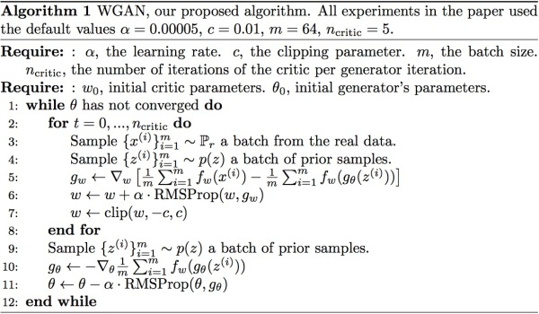

全文整理自知乎令人拍案叫绝的Wasserstein GAN
前言
GAN（生成对抗网络）自从2014年Ian Goodfellow提出以来，GAN就存在着训练困难、生成器和判别器的loss无法指示训练进程、生成样本缺乏多样性等问题。从那时起，很多论文都在尝试解决，但是效果不尽人意，比如最有名的一个改进DCGAN依靠的是对判别器和生成器的架构进行实验枚举，最终找到一组比较好的网络架构设置，但是实际上是治标不治本，没有彻底解决问题。
Wasserstein GAN
实际上作者整整花了两篇论文，在第一篇《Towards Principled Methods for Training Generative Adversarial Networks》里面推了一堆公式定理，从理论上分析了原始GAN的问题所在，从而针对性地给出了改进要点；在这第二篇《Wasserstein GAN》里面，又再从这个改进点出发推了一堆公式定理，最终给出了改进的算法实现流程
- 判别器最后一层去掉sigmoid
- 生成器和判别器的loss不取log
- 每次更新判别器的参数之后把它们的绝对值截断到不超过一个固定常数c
- 不要用基于动量的优化算法（包括momentum和Adam），推荐RMSProp，SGD也行
优点
Wasserstein GAN（下面简称WGAN）成功地做到了以下爆炸性的几点：
- 彻底解决GAN训练不稳定的问题，不再需要小心平衡生成器和判别器的训练程度
- 基本解决了collapse mode的问题，确保了生成样本的多样性
- 训练过程中终于有一个像交叉熵、准确率这样的数值来指示训练的进程，这个数值越小代表GAN训练得越好，代表生成器产生的图像质量越高（如题图所示）
- 以上一切好处不需要精心设计的网络架构，最简单的多层全连接网络就可以做到
算法简介

原始的GAN的问题
原始GAN中判别器要最小化如下损失函数，尽可能把真实样本分为正例，生成样本分为负例：
$$ -\mathbb{E}_{x\sim P_r}[\log D(x)] - \mathbb{E}_{x\sim P_g}[\log(1-D(x))] $$
其中\(P_{r}\)是真实样本分布， \(P_g \)是由生成器产生的样本分布。对于生成器，Goodfellow一开始提出来一个损失函数，后来又提出了一个改进的损失函数，分别是
$$ \mathbb{E}_{x\sim P_g}[\log(1-D(x))] $$
$$ \mathbb{E}_{x\sim P_g}[- \log D(x)] $$
第一种原始GAN形式的问题
一句话概括：判别器越好，生成器梯度消失越严重。WGAN前作从两个角度进行了论证，第一个角度是从生成器的等价损失函数切入的。
首先从公式1可以得到，在生成器G固定参数时最优的判别器\(D\)应该是什么。对于一个具体的样本x，它可能来自真实分布也可能来自生成分布，它对公式1损失函数的贡献是
$$ - P_r(x) \log D(x) - P_g(x) \log [1 - D(x)] $$
令其关于D(x)的导数为0，得
$$ - \frac{P_r(x)}{D(x)} + \frac{P_g(x)}{1 - D(x)} = 0 $$
化简得最优判别器为：
$$ D^*(x) = \frac{P_r(x)}{P_r(x) + P_g(x)} $$
这个结果从直观上很容易理解，就是看一个样本x来自真实分布和生成分布的可能性的相对比例。如果\(P_r(x) = 0\)且\( P_g(x) \neq 0 \)，最优判别器就应该非常自信地给出概率0；如果\(P_r(x) = P_g(x)\)，说明该样本是真是假的可能性刚好一半一半，此时最优判别器也应该给出概率0.5。
然而GAN训练有一个trick，就是别把判别器训练得太好，否则在实验中生成器会完全学不动（loss降不下去），为了探究背后的原因，我们就可以看看在极端情况——判别器最优时，生成器的损失函数变成什么。给公式2加上一个不依赖于生成器的项，使之变成
$$\mathbb{E}_{x\sim P_r}[\log D(x)] + \mathbb{E}_{x\sim P_g}[\log(1-D(x))]$$
注意，最小化这个损失函数等价于最小化公式2，而且它刚好是判别器损失函数的反。代入最优判别器即公式4，再进行简单的变换可以得到
$$\mathbb{E}_{x \sim P_r} \log \frac{P_r(x)}{\frac{1}{2}[P_r(x) + P_g(x)]} + \mathbb{E}_{x \sim P_g} \log \frac{P_g(x)}{\frac{1}{2}[P_r(x) + P_g(x)]} - 2\log 2$$（公式5)
变换成这个样子是为了引入Kullback–Leibler divergence（简称KL散度）和Jensen-Shannon divergence（简称JS散度）这两个重要的相似度衡量指标，后面的主角之一Wasserstein距离，就是要来吊打它们两个的。所以接下来介绍这两个重要的配角——KL散度和JS散度：
$$KL(P_1||P_2) = \mathbb{E}_{x \sim P_1} \log \frac{P_1}{P_2}（公式6）$$
$$JS(P_1 || P_2) = \frac{1}{2}KL(P_1||\frac{P_1 + P_2}{2}) + \frac{1}{2}KL(P_2||\frac{P_1 + P_2}{2})（公式7）$$
于是公式5就可以继续写成
$$2JS(P_r || P_g) - 2\log 2（公式8）$$
到这里读者可以先喘一口气，看看目前得到了什么结论：根据原始GAN定义的判别器loss，我们可以得到最优判别器的形式；而在最优判别器的下，我们可以把原始GAN定义的生成器loss等价变换为最小化真实分布P_r与生成分布P_g 之间的JS散度。我们越训练判别器，它就越接近最优，最小化生成器的loss也就会越近似于最小化 P_r 和P_g之间的JS散度。
问题就出在这个JS散度上。我们会希望如果两个分布之间越接近它们的JS散度越小，我们通过优化JS散度就能将\( P_g \)“拉向”\( P_r \)，最终以假乱真。这个希望在两个分布有所重叠的时候是成立的，但是如果两个分布完全没有重叠的部分，或者它们重叠的部分可忽略，它们的JS散度是多少呢？
答案是\(\log 2\)，因为对于任意一个x只有四种可能：
$$P_1(x) = 0且P_2(x) = 0$$
$$P_1(x) \neq 0且P_2(x) \neq 0$$
$$P_1(x) = 0且P_2(x) \neq 0$$
$$P_1(x) \neq 0且P_2(x) = 0$$
第一种对计算JS散度无贡献，第二种情况由于重叠部分可忽略所以贡献也为0，第三种情况对公式7右边第一个项的贡献是\(\log \frac{P_2}{\frac{1}{2}(P_2 + 0)} = \log 2\)，第四种情况与之类似，所以最终\(JS(P_1||P_2) = \log 2\)。
换句话说，无论\( P_r\)跟\(P_g\)
是远在天边，还是近在眼前，只要它们俩没有一点重叠或者重叠部分可忽略，JS散度就固定是常数\(\log 2\)，而这对于梯度下降方法意味着——梯度为0！此时对于最优判别器来说，生成器肯定是得不到一丁点梯度信息的；即使对于接近最优的判别器来说，生成器也有很大机会面临梯度消失的问题。